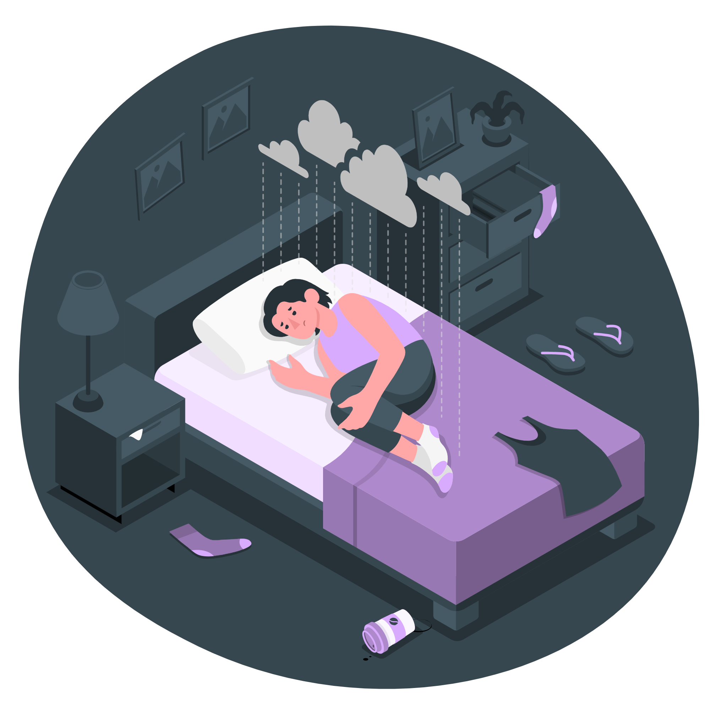

Problem Statement
Staring at a computer screen all night can make falling asleep difficult. Individuals can easily lose track of time, news and media stimulants keep the brain active, and the blue light reduces melatonin production. Due to these factors, coders and gamers are generally known to have irregular sleep schedules.
When people stay up late, they need to wake up later to retain enough sleep. However, not everyone’s schedule allows time for late mornings despite staying up late. They still need to be up for work, class, fitness, etc. This leads to coders and gamers getting a lot less sleep than they need.
Problem Characteristics
Blah blah blah